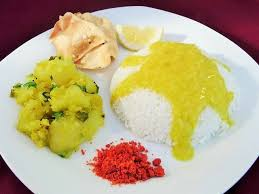

Waran Bhat

Description
Waran bhat is a vegan, Indian food preparation involving pigeon pea dal and rice as its main ingredients.
A quintessentially Marathi food preparation, Waran bhat has been described as "filling and non-spicy" and
good to have during the Indian summers.
Ingredients:
- Pigeon Pea Dal (Lentils) 1 cup
- Turmeric A pinch
- Asafoetida A pinch
- Oil 1 tea-spoon
- Salt To taste
- Raw Rice 1 cup
- Clarified butter 1 tea-spoon
- Lime juice To taste
Steps
- Wash the dal well (twice). Add 1 ½ cup to 2 cups of water to it. Add the turmeric, asafoetida, salt and the oil.
- Wash the rice well (twice). Add 2 ½ cups water to it.
- In a pressure cooker add enough water at the bottom, put the vessel with the lentils and put the rice vessel above that. Shut the pressure cooker lid, put the whistle and keep the pressure cooker on high flame.
- Let the whistle blow loud at least twice. Then reduce the flame to minimum. Let the lentils cook for another 10 minutes. Switch the flame off.
- After a gap of about 15 minutes open the lid. (Wow what an aroma you are going to get.)
- Remove the lentils vessel. Mash and mix well the lentils. Add a little water to make it pouring consistency. Once again put the vessel on a medium flame and bring the lentils (Waran) to a boil. Switch the flame off once the Waran boils well.
- To eat, first put a portion of rice (Bhat) in your plate. Mash it well and make a mound of it in the centre of the plate. Make a hole at the centre of the mound. Add clarified butter (pure ghee) and add the Waran. Mix the Waran and Bhat well. Add a few drops of lime juice. Once again mix well and start eating the ‘Heavenly’ preparation!
Home